The previous chapter introduced the basic principles of performance optimization, optimization methods, and related tools for Android application development. Because Java is the recommended application development language for Android developers, the optimization tools presented in Chapter 11 were mainly for Java. However, C/C++ development shouldn’t be excluded from Android app development. This chapter introduce the Android NDK for C/C++ application development along with related optimization methods and optimization tools.
Introduction to JNI
Java applications do not run directly on the hardware—they run in a virtual machine. The source code of an application is not compiled to get hardware instructions, but is instead compiled to allow a virtual machine interpret and execute code. For example, Android applications run in the Dalvik virtual machine (DVM); its compiled code is executable code for the DVM in .dex format. This feature means Java runs on the virtual machine and ensures its cross-platform capability: that is, its “compile once, run anywhere” feature. Dalvik has a just-in-time (JIT) compiler and is optimized to have a low memory requirement.
Everything has pros and cons. Java’s cross-platform capability causes it to be less connected to and limits its interaction with the local machine’s internal components, making it difficult to use local machine instructions to take advantage of the machine’s performance potential. It is difficult to use locally based instructions to run a huge existing software library, and this limits its functionality and performance. Starting in Android 4.4 (KitKat), Google introduced Android Runtime (ART), which is an application runtime environment that replaces Dalvik. ART transforms the application’s bytecode into native instructions that are later executed by the device’s runtime environment. ART introduces ahead-of-time (AOT) compilation by performing it when an application is installed.
Is there a way to make Java code and native code software collaborate and share resources? The answer is yes, using the Java Native Interface (JNI), which is an implementation method for a Java local operation. JNI is a Java platform defined by the Java standard to interact with the code on the local platform, generally known as the . But this chapter is about the mobile platform; and in order to distinguish it from the mobile cross-development host, we call it the . The interaction between Java Code and native application includes two directions: Java code calling native functions (methods), and local application calls to the Java code. Relatively speaking, the former method is used more in Android application development. So this chapter’s emphasis is on the approach in which Java code calls native functions.
Java calls native functions through JNI by having the local method stored in the form of library files. For example, on a Windows platform, the files are in .dll file format, and on Unix/Linux machines, the files are in .so file format. An internal method of calling the local library file enables Java to establish close contact with the local machine: this is called the system-level approach for various interfaces.
JNI usually has two usage scenarios: first, to be able to use legacy code (for example, prior to use C/C++, Delphi and other development tools); second, in order to better, more directly interact with the hardware for better performance.
JNI’s general workflow is as follows: Java initiates calls so that the local function’s side code (such as a function written in C/C++) runs. This time the object is passed over from the Java side and run a local function Then the result value is returned to the Java code. Here JNI is an adapter, completing mapping between the variables and functions (Java method) between the Java language and native compiled languages (such as C/C++). Java and C/C++ are very different in terms of function prototype definitions and variable types. In order to make the two match, JNI provides a jni.h file to complete the mapping between them. This process is shown in Figure 12-1.
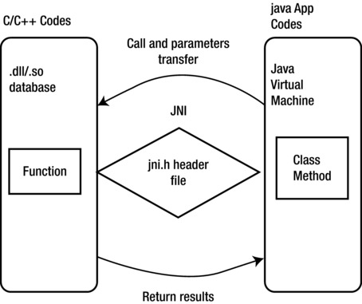
Figure 12-1.
JNI general workflow
The general framework of a C/C++ function call via JNI and a Java program (in particular, an Android application) is as follows:
1.
A method of compiling native declared in a Java class (C/C++ function).
2.
The .java source code file containing the native method is compiled.
3.
The javah command generates a .h file, including a function prototype for implementing the native method based on the .class files.
4.
C/C++ is used to implement the local method.
5.
The recommended method for this step is to first copy the function prototypes in the .h file and then modify the function prototypes and add the function body. In this process, the following points should be noted:
- The JNI function call must use the C function. If it is a C++ function, do not forget to add the extern C keyword.
- Method names should use the following template: Java_package_class_method, or Java_ package name _ class name _ function method name.
6.
The C/C++ file is compiled into a dynamic library (under Windows, a .dll file; under Unix/Linux, a .so file).
Use the System.loadLibrary() or System.load() method in Java to load the dynamic library that is generated. These two functions are slightly different:
- System.loadLibrary() loads the default directory under the local link library.
- System.load()requires an absolute path, depending on the local directory to add a cross-link library.
In the first step, Java calls the native C/C++ function; the format is not the same for both C and C++. For example, for Java methods such as non-passing parameters and returning a String class, C and C++ code for the function differ in the following ways:
- C code:
Call function:(*env) -> <jni function> (env, <parameters>)
Return jstring:return (*env)->NewStringUTF(env, "XXX");
- C++ code:
Call function:env -> <jni function> (<parameters>)
Return jstring:return env->NewStringUTF("XXX");
NewStringUTF is the Java String object’s function generated in C/C++, provided by JNI.
Java Methods and C Function Prototype Java
Earlier you saw that in the code framework for Java programs to call a C/C++ function, you can use the javah command, which generates the corresponding .h file for native methods based on the .class files. The .h file is generated in accordance with certain rules, to make the correct Java code to find the corresponding C function to execute. Another good solution is to use env->RegisterNatives function to manually do the mapping and avoid using javah.
For example, suppose you have the following Java code for Android:
public class HelloJni extends Activity
1. {
2. public void onCreate(Bundle savedInstanceState)
3. {
4. TextView tv.setText(stringFromJNI() ); // Use C function Code
5. }
6. public native String stringFromJNI();
7. }
For the C functions stringFromJNI() used on line 4, the function prototype in the .h file generated by javah is
1. JNIEXPORT jstring JNICALL Java_com_example_hellojni_HelloJni_stringFromJNI
2. (JNIEnv *, jobject);
The C source code files to define the function code are roughly as follows:
1. /*
2. ......
3. Signature: ()Ljava/lang/String;
4. */
5. jstring Java_com_example_hellojni_HelloJni_stringFromJNI (JNIEnv* env, jobject thiz )
6. {
7. ......
8. return (*env)->NewStringUTF(env, "......");
9. }
From this code, you can see that the function name is quite long but still regular, in full accordance with the naming convention java_package_class_method. That is, the stringFromJNI() method in Hello.java corresponds to the Java_com_example_hellojni_HelloJni_stringFromJNI() method in C/C++.
Notice the comment for Signature: ()Ljava/lang/String;. Here the () in ()Ljava/lang/String; indicates the function parameter is empty, which means, other than the two parameters JNIEnv * and jobject, there are no other parameters. JNIEnv * and jobject are two parameters that all JNI functions must have for the JNI environment and corresponding Java class (or object), respectively. Ljava/lang/String; indicates that the function’s return value is a Java String object.
Java and C Data Type Mapping
As mentioned, Java and C/C++ have very different variable types. In order to make the two match, JNI provides a mechanism to complete the mapping between Java and C/C++. The relationships of the main types are shown in Table 12-1.
Table 12-1.
The Correspondence between Java Types and Local (C/C++) Types
Java Type | Native Type | Description |
|---|---|---|
boolean
|
jboolean
| C/C++ 8-bit integer |
byte
|
jbyte
| C/C++ unsigned 8-bit integer |
char
|
jchar
| C/C++ unsigned 16-bit integer |
short
|
jshort
| C/C++ signed 16-bit integer |
int
|
jint
| C/C++ signed 32-bit integer |
long
|
jlong
| C/C++ unsigned 64-bit integer |
float
|
jfloat
| C/C++ 32-bit floating point |
double
|
jdouble
| C/C++ 64-bit floating point |
void
|
void
| N/A |
Object
|
jobject
| Any Java object, or does not correspond to an object of Java type |
Class
|
jclass
| Class object |
String
|
jstring
| String object |
Object[]
|
jobjectArray
| Array of any object |
boolean[]
|
jbooleanArray
| Boolean array |
byte[]
|
jbyteArray
| Array of bits |
char[]
|
jcharArray
| Character array |
short[]
|
jshortArray
| Short integer array |
int[]
|
jintArray
| Integer array |
long[]
|
jlongArray
| Long integer array |
float[]
|
jfloatArray
| Floating-point array |
double[]
|
jdoubleArray
| Double floating-point array |
When a Java parameter is passed, you can use C code as follows:
- Basic types can be used directly: For example, double and jdouble are interchangeable. Basic types are those from boolean through void in Table 12-1. In such a type, if the user passes a boolean parameter into the method, then there is a local method jboolean corresponding to the boolean type. Similarly, if the local methods return a jint, then an int is returned in Java.
- Java object usage: An Object object has String objects and a generic object. The two objects are handled a little differently:
- String object: The String object passed by Java programs is the corresponding jstring type in the local method. The jstring type and char * in C are different. So if you just use it as a char *, an error will occur. Therefore, jstring nust be converted into a char * in C/C++ prior to use. Here you use the JNIEnv method for conversion.
- Object object: Use the following code to get the object handler for the class:
jclass objectClass = (env)->FindClass("com/ostrichmyself/jni/Structure");
- Use the following code to get the required domain handler for the class:
jfieldID str = (env)->GetFieldID(objectClass,"nameString","Ljava/lang/String;");
jfieldID ival = (env)->GetFieldID(objectClass,"number","I");
- Then use the following similar code to assign values to the incoming fields of the jobject object:
(env)->SetObjectField(theObjet,str,(env)->NewStringUTF("my name is D:"));
(env)->SetShortField(theObjet,ival,10);
- If there is no incoming object, then C code can use the following code to generate a new object:
jobject myNewObjet = env->AllocObject(objectClass);
Note
NewObject() needs to be called instead if you want the object constructor to be called.
Java Array Processing
For an array type, JNI provides some operaable functions. For example, GetObjectArrayElement can take the incoming array and use NewObjectArray to create an array structure.
Resource Release
The principle of resource release is as follows:
- Objects of C/C++ new or object of malloc need to use the C/C++ to release.
- If the new object of the JNIEnv method is not used by Java, it must be released.
- To convert a string object from Java to UTF using GetStringUTFChars, you need to open the memory, and you must use ReleaseStringUTFChars method to release the memory after you are finished using char *.
These are brief descriptions of the basic ideas of type mapping when Java exchanges data with C/C++. For more information about Java and C/C++ data types, please refer to related Java and JNI books, documentation, and examples.
Introduction to NDK
You now know that the Java code can access local functions (such as C/C++) using JNI. To achieve this, you need development tools. As stated earlier, an entire set of development tools based on the core Android SDK are available that you can use to cross-compile Java applications to applications that can run on the target Android device. Similarly, you need cross-development tools to compile C/C++ code into applications that can run on an Android device. This tool is the Android Native Development Kit (NDK), which you can download from
http://developer.android.com
.
Prior to the NDK, third-party applications on the Android platform were developed on a special Java-based DVM. The announcement of the native SDK allows developers to directly access Android system resources and to implement parts of apps using native-code languages such as C and C++. The application package file (.apk) can be directly embedded into the local library. In short, with the NDK, Android applications originally run on the DVM can use native languages like C/C++ for program execution. This brings the following benefits:
- Performance improvements from using native code to develop parts of programs that require high performance, and by directly accessing the CPU and hardware
- The ability to reuse existing native code
Of course, compared to the DVM, using native SDK programming also has some disadvantages, such as added program complexity, difficulty in guaranteeing compatibility, the inability to access the Framework API, more difficult debugging, decreased flexibility, and so on. In addition, access to JNI requires additional performance overhead.
In short, NDK application development has pros and cons. You need to use NDK at your own discretion. The best strategy is to use NDK to develop parts of the application for which native code will improve performance.
NDK includes the following major components:
- Tools and build file needed to generate native code libraries from C/C++ sources. These include a series of NDK commands, including javah (use the .class files to generate the corresponding .h files) and gcc (described later)
- A consistent local library embedded in the application package (.apk files) that can be deployed in Android devices
- Support for some native system header files and libraries for all future Android platforms
- Documentation, samples, and tutorials
The process framework of NDK application development is shown in Figure 12-2. An Android application consists of three parts: Android application files, Java native library files, and dynamic libraries. These three parts are generated from different sources through the respective generation path. For an ordinary Android application, the Android SDK generates Android applications files and Java native library files. The Android NDK generates the dynamic library files (the file with the .so extension) using native code (typically C source code files). Finally, Android application files, Java native library files, and dynamic libraries are installed on the target machine, and complete collaborative applications run.
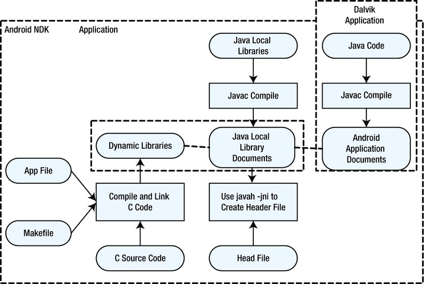
Figure 12-2.
Flowchart of Android NDK application development
Application projects developed with NDK (referred to as NDK application projects) have the components shown in Figure 12-3. Unlike typical applications developed using the Android SDK, in addition to the Dalvik class code, manifest files, and resources, NDK application projects also include JNI and a shared library generated by NDK.
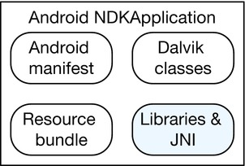
Figure 12-3.
Application components for an Android NDK application
Android adds NDK support in its key API version. Each version includes some new NDK features, simple C/C++, a compatible Standard Template Library (STL), hardware expansion, and so on. These features make Android more open and more powerful. The mapping of the Android API and its corresponding relationship with the NDK are shown in Table 12-2.
Table 12-2.
Relationship between the Main Android API and NDK Versions
API Version | Supported NDK Version |
|---|---|
API Level 3 | Android 1.5 NDK 1 |
API Level 4 | Android 1.6 NDK 2 |
API Level 7 | Android 2.1 NDK 3 |
API Level 8 | Android 2.2 NDK 4 |
API Level 9 | Android 2.3 NDK 5 |
API Level 12 | Android 3.1 NDK 6 |
API Level 14 | Android 4.0.1 NDK 7 |
API Level 15 | Android 4.0.3 NDK 8 |
API Level 16 | Android 4.1 NDK 8b |
API Level 16 | Android 4.2 NDK 8d |
API Level 17 | Android 4.2 NDK 9 |
API Level 18 | Android 4.3 NDK 9d |
API Level 19 | Android 4.4 NDK 10 |
TIP: THE MEANING OF APPLICATION BINARY INTERFACE (ABI)
Each piece of native code generated using the Android NDK is given a matching application binary interface (ABI). The ABI precisely defines how the application and its code interact with the system at runtime. An ABI is roughly like instruction set architecture (ISA) in computer architecture.
A typical ABI usually contains the following information:
- Machine code the CPU instruction set should use
- Runtime memory access ranking
- The format of executable binary files (dynamic libraries, programs, and so on) as well as what type of content is allowed and supported
- Different conventions used in passing data between the application code and systems (for example, when the function call registers and/or how to use the stack, alignment restrictions, and so on)
- Alignment and size limits of enumerated types, structure fields, and array
- A unique name; the available list of function symbols for application machine code at runtime usually comes from a very specific set of libraries
Android currently supports the following ABI types:
- armeabi: ABI name for the ARM CPU, which supports at least the ARMv5TE instruction set.
- armeabi-v7a: Another ABI name for ARM-based CPUs; it extends the armeabi CPU instruction set extensions, such as Thumb-2 instruction set extensions and floating-point processing unit directives for vector floating-point hardware.
- x86: ABI name generally known for supporting the x86 or IA-32 instruction set of the CPU. More specifically, its target is often referred to in the following sections as the i686 or Pentium Pro instruction set. Intel Atom processors belong to this ABI type.
- MIPS: ABI for MIPS-based CPUs that support the MIPS32r1 instruction set. The ABI includes the following features: MIPS32 revision 1 ISA, little-endian, O32, hard-float, and no DSP applicationThese types have different compatibilities. x86 is incompatible with armeabi and armeabi-v7a. The armeabi-v7a machine is compatible with armeabi, which means the armeabi framework instruction set can run on an armeabi-v7a machine, but not necessarily the other way around, because some ARMv5 and ARMv6 machines do not support armeabi-v7a code. Therefore, when you build the application, users should be chosen carefully based on their corresponding ABI machine type.
Installing NDK and Setting Up the Environment
The NDK is included in Intel Beacon Mountain for Linux, Intel Beacon Mountain for OS X and Intel Integrated Native Developer Experience (INDE) for Windows host system, and is installed when you install one of those Intel tools. The installation is detailed in Chapter 3. An environment setup program is also included in Intel INDE; you can download it and run the setup automatically.
Installing CDT
CDT is an Eclipse plug-in that compiles C code into .so shared libraries. After installing the Cygwin and NDK module, you already can compile C code into .so shared libraries at the command line, which means the core component of Windows NDK is already installed. If you prefer to use the Eclipse IDE rather than a command-line compiler to compile the local library, you need to install the CDT module.
If you need to install it, follow these steps.
1.
Visit the official Eclipse web site (
www.eclipse.org/cdt/downloads.php
) and download the latest CDT package.
2.
Start Eclipse. Select Help ➤ Install New Software ➤ Start to install CDT.
3.
In the pop-up Install dialog box, click Add.
4.
In the pop-up Add Repository dialog box, enter a name.
5.
For Location, you can enter the local address or the Internet address. If you use an Internet address, Eclipse goes to the Internet to download and install the package; a local address directs Eclipse to install the software from the local package. In this case, enter the local address; then click the Archive button in the pop-up dialog box and enter the directory and file name for the CDT file you downloaded. If you downloaded it from the Internet, the address is
http://download.eclipse.org/tools/cdt/releases/galileo/
.
6.
After returning to the Install dialog box, click to select the software components that need to be installed. In this example, CDT Main Feature is the required component you need to select. A list of detailed information about CDT components to install is displayed, as shown in Figure 12-4.
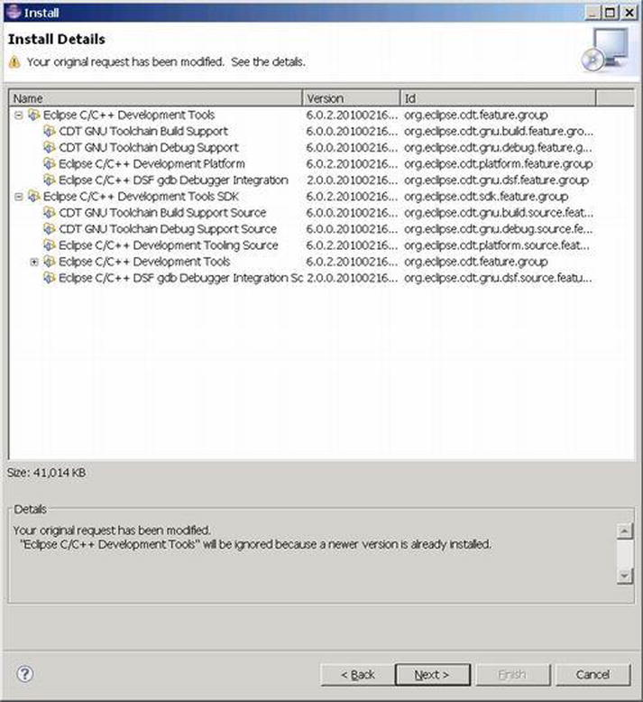
Figure 12-4.
Detailed information for the CDT component installation
7.
Review the License dialog box, and click “I accept the terms of the license agreement” to continue.
8.
The installation process starts. When it is finished, restart Eclipse to complete the installation.
NDK Examples
This section provides an example to illustrate the use of JNI and NDK. As described previously, NDK can be run from both the command line and in the Eclipse IDE. The example uses both methods to generate the same NDK application.
Using the Command Line to Generate a Library File
The app name in this example is jnitest. It is a simple example to demo the JNI code framework. The steps are as follows:
1.
Create an Android app project, compile the code, and generate the .apk package. You first create a project in Eclipse, and name the project jnitest. Choose Build SDK to support the x86 version of the API, as shown in Figure 12-5. For the other options, use the default values. Then generate the project.
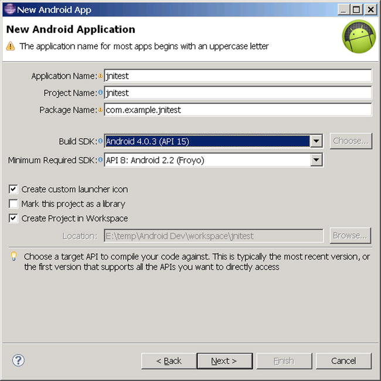
Figure 12-5.
Setting up the jnitest project parameters
After the project has been generated, the file structure is created as shown in Figure 12-6. Note the directory where the library file (in this case, android.jar) is located, because later steps use this parameter.
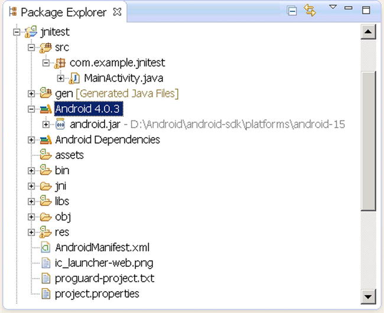
Figure 12-6.
File structure of the jnitestproject
a.
Modify the Java files to create code using a C function. In this case, the only Java file is MainActivity.java; modify its code as follows:
1. package com.example.jnitest;
2. import android.app.Activity;
3. import android.widget.TextView;
4. import android.os.Bundle;
5. public class MainActivity extends Activity
6. {
7. @Override
8. public void onCreate(Bundle savedInstanceState)
9. {
10. super.onCreate(savedInstanceState);
11. TextView tv = new TextView(this);
12. tv.setText(stringFromJNI() ); // stringFromJNIas a C function
13. setContentView(tv);
14. }
15. public native String stringFromJNI();
16.
17. static {
18. System.loadLibrary("jnitestmysharelib");
19. }
20. }
The code is very simple. In lines 11–13, you use a TextView to display a string returned from the stringFromJNI() function. But unlike in the Android application discussed earlier, nowhere in the entire project can you find the implementation code for this function. So where does the function implementation occur? Line 15 declares that the function is not a function written in Java, but is instead written by the local (native) libraries, which means the function is outside of Java. Because it is implemented in the local library, the question is, what libraries? The answers are described in lines 17–20. The parameter of the static function LoadLibrary of the System class describes the name of the library: the library is one of shared libraries in Linux named libjnitestmysharelib.so. The application code declared in the static area will be executed before Activity.onCreate. The library will be loaded into memory at the first use.
Interestingly, when the loadLibrary function loads the library name, it automatically adds the lib prefix before the parameters and the .so suffix at the end. Of course, if the name of the library file specified by parameter starts with lib, the function does not add the lib prefix.
b.
Generate the project in Eclipse. Only build it—do not run it. This compiles the project, but the .apk file is not deployed to the target machine.
When this step is completed, the corresponding .class files are generated in the project directory bin\classes\com\example\jnitest. This step must be completed before the next step, because the next step needs to use the appropriate .class files.
2.
Create a jni subdirectory in the project root directory. For example, if the project root directory is E:\temp\AndroidDev\workspace\jnitest, then you can use the md command to create the jni subdirectory:
E:\temp\Android Dev\workspace\jnitest>mkdir jni
Test whether the directory has been built:
E:\temp\Android Dev\workspace\jnitest>dir
......
2013-02-01 00:45 <DIR> jni
3.
Create a C interface file. This is the C function prototype that works with the local (external) function. Specific to this case are the C function prototypes of the stringFromJNI function. You declare in Java that you need to use the prototype of the external function; but it is in the Java format, so you need to change it to C format, which means building a C JNI interface file. This step can be done with the javah command:
$ javah -classpath <directory of jar and .class documents> -d <directory of .h documents> <the package + class name of class>
The command parameters are as follows:
- -classpath: The class path
- -d: The storage directory for the generated header file
- <class name>: The complete .class class name of a native function being used, which consists of “the package + class name of class” component.
For this example, follow these steps:
a.
Enter the root directory using the command line (for this example, E:\temp\Android Dev\workspace\jnitest).
b.
Run the following command:
E:> javah -classpath "D:\Android\android-sdk\platforms\android-15\android.jar";bin/classes com.example.jnitest.MainActivity
In this example, the class of the native function stringFromJNI’s used is MainActivity; and the resulting file after compiling this class is MainActivity.class, which is located in the root directory of the project bin\classes\com\example directory. The first line of the source code file of its class MainActivity.java shows where the package of the class is:
package com.example.jnitest;
Therefore, this is the command: “class name = package name.Class name” (be careful not to use the .class suffix).
first needs to explain the Java library path of the entire package (in this case, the library file is android.jar; its location is at D:\Android\android-sdk\ platforms\android-15\android.jar). Second, it needs to define the target class (MainActivity.class) directory. In this case, it is bin\classes under bin\classes\com\example\MainActivity.class, both separated by semicolons (C).
c.
Now the .h file is generated in the current directory (the project root directory). The file defines the C language function interface. You can test the output:
E:\temp\Android Dev\workspace\jnitest>dir
......
2013-01-31 22:00 3,556 com_example_jnitest_MainActivity.h
It is apparent that a new .h file has been generated. The document reads as follows:
1. /* DO NOT EDIT THIS FILE - it is machine generated */
2. #include <jni.h>
3. /* Header for class com_example_jnitest_MainActivity */
4.
5. #ifndef _Included_com_example_jnitest_MainActivity
6. #define _Included_com_example_jnitest_MainActivity
7. #ifdef __cplusplus
8. extern "C" {
9. #endif
10. #undef com_example_jnitest_MainActivity_MODE_PRIVATE
11. #define com_example_jnitest_MainActivity_MODE_PRIVATE 0L
12. #undef com_example_jnitest_MainActivity_MODE_WORLD_READABLE
13. #define com_example_jnitest_MainActivity_MODE_WORLD_READABLE 1L
14. #undef com_example_jnitest_MainActivity_MODE_WORLD_WRITEABLE
15. #define com_example_jnitest_MainActivity_MODE_WORLD_WRITEABLE 2L
16. #undef com_example_jnitest_MainActivity_MODE_APPEND
17. #define com_example_jnitest_MainActivity_MODE_APPEND 32768L
18. #undef com_example_jnitest_MainActivity_MODE_MULTI_PROCESS
19. #define com_example_jnitest_MainActivity_MODE_MULTI_PROCESS 4L
20. #undef com_example_jnitest_MainActivity_BIND_AUTO_CREATE
21. #define com_example_jnitest_MainActivity_BIND_AUTO_CREATE 1L
22. #undef com_example_jnitest_MainActivity_BIND_DEBUG_UNBIND
23. #define com_example_jnitest_MainActivity_BIND_DEBUG_UNBIND 2L
24. #undef com_example_jnitest_MainActivity_BIND_NOT_FOREGROUND
25. #define com_example_jnitest_MainActivity_BIND_NOT_FOREGROUND 4L
26. #undef com_example_jnitest_MainActivity_BIND_ABOVE_CLIENT
27. #define com_example_jnitest_MainActivity_BIND_ABOVE_CLIENT 8L
28. #undef com_example_jnitest_MainActivity_BIND_ALLOW_OOM_MANAGEMENT
29. #define com_example_jnitest_MainActivity_BIND_ALLOW_OOM_MANAGEMENT 16L
30. #undef com_example_jnitest_MainActivity_BIND_WAIVE_PRIORITY
31. #define com_example_jnitest_MainActivity_BIND_WAIVE_PRIORITY 32L
32. #undef com_example_jnitest_MainActivity_BIND_IMPORTANT
33. #define com_example_jnitest_MainActivity_BIND_IMPORTANT 64L
34. #undef com_example_jnitest_MainActivity_BIND_ADJUST_WITH_ACTIVITY
35. #define com_example_jnitest_MainActivity_BIND_ADJUST_WITH_ACTIVITY 128L
36. #undef com_example_jnitest_MainActivity_CONTEXT_INCLUDE_CODE
37. #define com_example_jnitest_MainActivity_CONTEXT_INCLUDE_CODE 1L
38. #undef com_example_jnitest_MainActivity_CONTEXT_IGNORE_SECURITY
39. #define com_example_jnitest_MainActivity_CONTEXT_IGNORE_SECURITY 2L
40. #undef com_example_jnitest_MainActivity_CONTEXT_RESTRICTED
41. #define com_example_jnitest_MainActivity_CONTEXT_RESTRICTED 4L
42. #undef com_example_jnitest_MainActivity_RESULT_CANCELED
43. #define com_example_jnitest_MainActivity_RESULT_CANCELED 0L
44. #undef com_example_jnitest_MainActivity_RESULT_OK
45. #define com_example_jnitest_MainActivity_RESULT_OK -1L
46. #undef com_example_jnitest_MainActivity_RESULT_FIRST_USER
47. #define com_example_jnitest_MainActivity_RESULT_FIRST_USER 1L
48. #undef com_example_jnitest_MainActivity_DEFAULT_KEYS_DISABLE
49. #define com_example_jnitest_MainActivity_DEFAULT_KEYS_DISABLE 0L
50. #undef com_example_jnitest_MainActivity_DEFAULT_KEYS_DIALER
51. #define com_example_jnitest_MainActivity_DEFAULT_KEYS_DIALER 1L
52. #undef com_example_jnitest_MainActivity_DEFAULT_KEYS_SHORTCUT
53. #define com_example_jnitest_MainActivity_DEFAULT_KEYS_SHORTCUT 2L
54. #undef com_example_jnitest_MainActivity_DEFAULT_KEYS_SEARCH_LOCAL
55. #define com_example_jnitest_MainActivity_DEFAULT_KEYS_SEARCH_LOCAL 3L
56. #undef com_example_jnitest_MainActivity_DEFAULT_KEYS_SEARCH_GLOBAL
57. #define com_example_jnitest_MainActivity_DEFAULT_KEYS_SEARCH_GLOBAL 4L
58. /*
59. * Class: com_example_jnitest_MainActivity
60. * Method: stringFromJNI
61. * Signature: ()Ljava/lang/String;
62. */
63. JNIEXPORT jstring JNICALL Java_com_example_jnitest_MainActivity_stringFromJNI
64. (JNIEnv *, jobject);
65.
66. #ifdef __cplusplus
67. }
68. #endif
69. #endif
In this code, pay special attention to lines 63–64, which are C function prototypes of a local function stringFromJNI.
4.
Compile the corresponding C file. This is the true realization of a local function (stringFromJNI). The source code file is obtained by modifying the .h file based on the previous steps.
Create a new .c file under the jni subdirectory in the project. The file name can be anything; in this case, it is jnitestccode.c. The contents are as follows:
1. #include <string.h>
2. #include <jni.h>
3. jstring Java_com_example_hellojni_HelloJni_stringFromJNI( JNIEnv* env, jobject thiz )
4. {
5. return (*env)->NewStringUTF(env, "Hello from JNI !"); // Newly added code
6. }
The code that defines the function implementation is very simple. Line 3 is the Java code used in the prototype definition of the function stringFromJNI; it is basically a copy of the corresponding contents of the .h file obtained from lines 63–64 of com_example_jnitest_MainActivity.h), slightly modified to make the point. The prototype formats of this function are fixed; JNIEnv* env and jobject thiz are inherent parameters of JNI. Because the parameter of the stringFromJNI function is empty, there are only two parameters in the generated C function. The role of the code in the fifth line is to return the string “Hello from JNI!” as the return value.
The code in line 2 is the header file that contains the JNI function, which is required for any functions that use JNI. As it relates to the string function, line 1 contains the corresponding header file in this case. After completing these steps, the .h file has no use and can be deleted.
5.
Create the NDK makefile file in the jni directory. These documents are mainly Android.mk and Application.mk: Android.mk is required, but if you use the default application configuration, you do not need Application.mk. The specific steps are as follows:
a.
Create a new Android.mk text file under the jni directory in the project. This file is used to tell the compiler about some requirements, such as which C files to compile, what file name to use for compiled code, and so on. Enter the following:
1. LOCAL_PATH := $(call my-dir)
2. include $(CLEAR_VARS)
3. LOCAL_MODULE := jnitestmysharelib
4. LOCAL_SRC_FILES := jnitestccode.c
5. include $(BUILD_SHARED_LIBRARY)
Line 3 represents the generated .so file name (identifying each module described in your Android.mk file). It must be consistent with parameter values of the System.loadLibrary function in the Java code. This name must be unique and may not contain any spaces.
Note
The build system automatically generates the appropriate prefix and suffix; in other words, if one is the shared library module named jnitestmysharelib, then a libjnitestmysharelib.so file is generated. If you name the library libhello-jni, the compiler does not add a lib prefix and generates libhello-jni.so too.
The LOCAL_SRC_FILES variable on line 4 must contain the C or C++ source code files to be compiled and packaged into modules. The previous steps create a C file name.
Note
You do not have to list the header files and include files here, because the compiler automatically identifies the dependent files for you—just list source code files that are directly passed to the compiler. In addition, the default extension name of C++ source files is .cpp. It is possible to specify a different extension name, as long as you define the LOCAL_DEFAULT_CPP_EXTENSION variable. Don’t forget the period character at the start (.cxx, rather than cxx).
The previous code in lines 3 and 4 is very important and must be modified for each NDK application based on its configuration. The contents of the other lines can be copied from the example.
b.
Create an Application.mk text file under the jni directory in the project. This file is used to tell the compiler the specific settings for this application. Enter the following:
APP_ABI := x86
This file is very simple; the object code generated by the application instructions is for 86 architecture, so you can run the application on Intel Atom machines. For APP_ABI parameters, you can use any architecture (x86, armeabi, armeabi-v7a or MIPS) that you want to support.
6.
Compile the .c file to the .so shared library file. Go to the project root directory (where AndroidManifest.xml is located) and run the ndk-build command:
E:\temp\Android Dev\workspace\jnitest>ndk-build
D:/Android/android-ndk-r8d/build/core/add-application.mk:128: Android NDK: WARNING: APP_PLATFORM android-14 is larger than android:minSdkVersion 8 in ./AndroidM
anifest.xml
"Compile x86 : jnitestmysharelib <= jnitestccode.c
SharedLibrary : libjnitestmysharelib.so
Install : libjnitestmysharelib.so => libs/x86/libjnitestmysharelib.so
This command adds two subdirectories (libs and obj) in the project folder and creates a .so file (command execution information prompt file named libjnitestmysharelib.so) under the obj directory.
If these steps do not define the specified ABI in the Application.mk file, the ndk-build command generates object code for the ARM architecture (armeabi). If you want to generate the x86 architecture instructions, you can do so using the ndk-build APP_ABI = x86 command to remedy the situation. The architecture of the object code generated by this command is still x86.
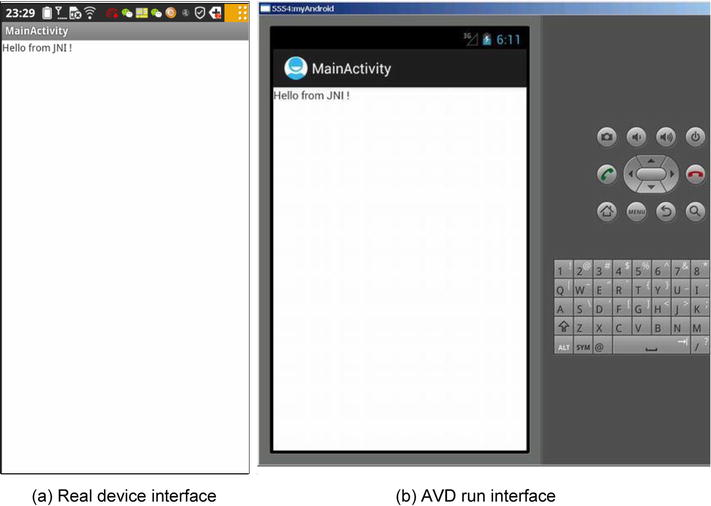
Figure 12-7.
jnitest application interface
Generating a Library File in the IDE
The previous section described the process of compiling C files into dynamic library .so files that can be run on the Android target device. To do this, you run the ndk-build command in the command line. You can also complete this step in the Eclipse IDE.
Eclipse supports direct NDK integration. You can install CDT into Eclipse, create an Android project to which you want to add C/C++ code, create a jni/ directory in your project directory, place your C/C++ sources file in the same directory, and put the Android.mk file into it—this is a makefile that tells the Android build-system how to build your files.
If for some reason, you need to manually build the code, you can use the following process to generate the library files in the IDE. The code in steps 1–7 is exactly the same as in the previous section, except that in step 6, you compile .c files into .so shared library files. This is explained in detail in a moment:
1.
Compile the .c file into the .so shared library file. Right-click the project name, select Build Path ➤ Config Build Path, and, in the pop-up dialog box, select the Builders branch. Click the New button in the dialog box, and then; double-click Program in the prompt dialog box. This process is shown in Figure 12-8.
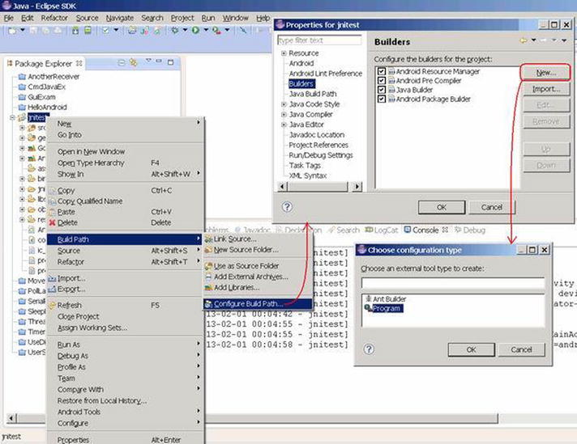
Figure 12-8.
Entering parameters settings for the interface to compile C code in Eclipse
2.
In the pop-up Edit Configuration dialog box, for the Main tab settings, enter the following:
- Location: The path to the Cygwin bash.exe
- Working Directory: The bin directory of Cygwin
- Arguments:
--login -c "cd '/cygdrive/E/temp/Android Dev/workspace/jnitest' && $ANDROID_NDK_ROOT/ndk-build"
- E/temp/Android Dev/workspace/jnitest is the drive letter and path for the project. The settings are shown in Figure 12-9.
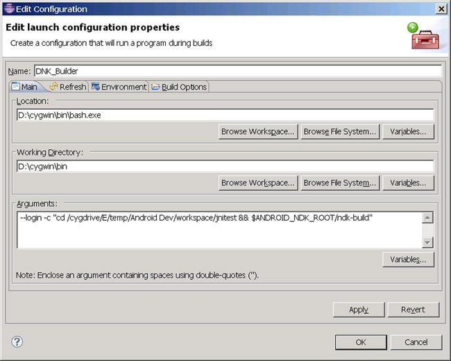
Figure 12-9.
Main tab setting in the Edit Configuration dialog box
3.
Configure the Refresh tab, ensuring that the The Entire Workspace and Recursively Include Sub-folders items are selected, as shown in Figure 12-10.
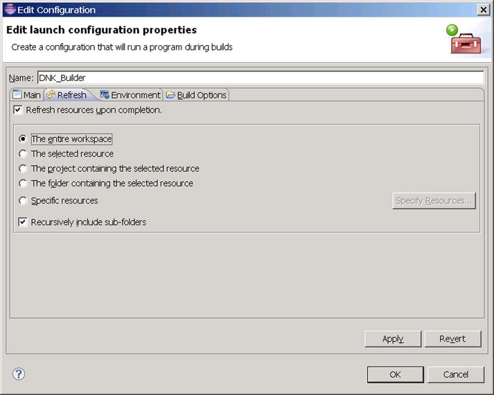
Figure 12-10.
Edit Configuration dialog box Refresh tab settings
4.
Reconfigure the Build Options tab. Select During Auto Builds and Specify Working Set of Relevant Resources, as shown in Figure 12-11.
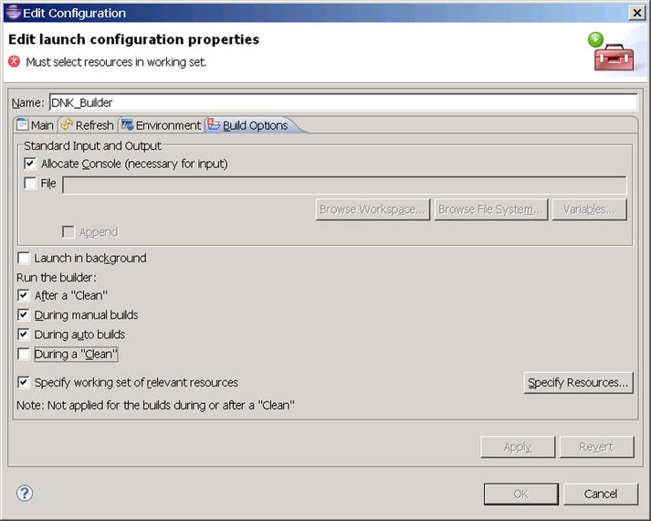
Figure 12-11.
Edit Configuration dialog box Build Options tab settings
5.
Click the Specify Resources button. In the Edit Working Set dialog box, select the jni directory, as shown in Figure 12-12.
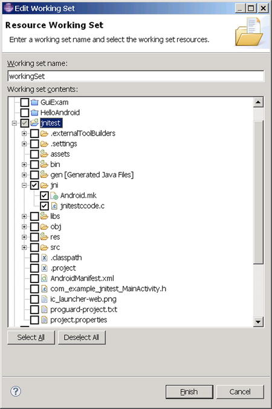
Figure 12-12.
Select source code and directories where related files are located
6.
Save the configuration. It will automatically compile C-related code under the jni directory and output the corresponding .so library files to the project’s libs directory. The libs directory is created automatically. In the Console window, you can see the output of the build is as follows:
/cygdrive/d/Android/android-ndk-r8d/build/core/add-application.mk:128: Android NDK: WARNING: APP_PLATFORM android-14 is larger than android:minSdkVersion 8 in ./AndroidManifest.xml
Cygwin : Generating dependency file converter script
Compile x86 : jnitestmysharelib <= jnitestccode.c
SharedLibrary : libjnitestmysharelib.so
Install : libjnitestmysharelib.so => libs/x86/libjnitestmysharelib.so
Workflow Analysis for NDK Application Development
The process of generating an NDK project as described works naturally to achieve C library integration with Java. You compile .c files into .so shared library files. The intermediate version of the libraries is put into the obj directory, and the final version is put into the libs directory. When this is completed, the project file structure is created as shown in Figure 12-13.
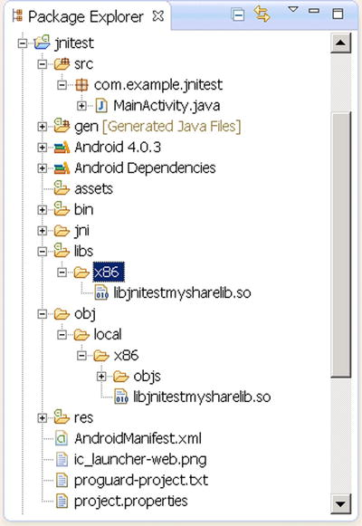
Figure 12-13.
The jnitest project structure after NDK library files are generated
When you run the project, the shared library .so files are in the project directory on the host machine and are packed in a generated .apk file. The .apk file is essentially a compressed file; you can use compression software like WinRAR to view its contents. For this example, you can find the .apk file in the bin subdirectory of the project directory; open it with WinRAR to show the file structure. The content of the lib subdirectory of the .apk is a clone of the content of the project’s lib subdirectory.
When the .apk is deployed to the target machine, it is unpacked. The .so files are placed in the /data/dat/XXX/lib directory, where XXX is the application package name. For this example, the directory is /data/data/com.example.jnitest/lib. You can view the file structure of the target machine under the Eclipse DDMS; the file structure for the example is shown in Figure 12-14. If you are interested, you can try it on the command line, using the adb shell command to view the corresponding contents in the target file directory.
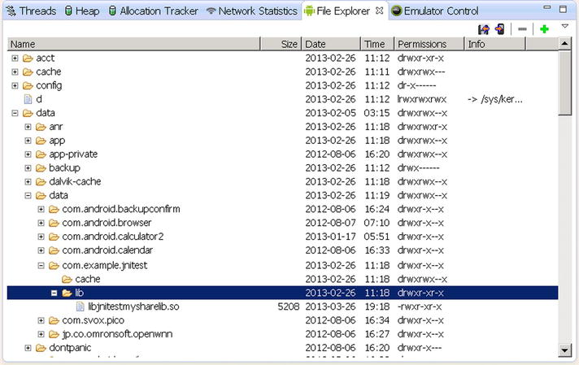
Figure 12-14.
jnitest application deployment target file structure
In addition, if you run the jnitest application in an emulator (in this case, the target machine is a virtual machine), you can see the following output in the Eclipse Logcat window:
1. 07-10 05:43:08.579: E/Trace(6263): error opening trace file: No such file or directory (2)
2. 07-10 05:43:08.729: D/dalvikvm(6263): Trying to load lib /data/data/com.example.jnitest/lib/libjnitestmysharelib.so 0x411e8b30
3. 07-10 05:43:08.838: D/dalvikvm(6263): Added shared lib /data/data/com.example.jnitest/lib/libjnitestmysharelib.so 0x411e8b30
4. 07-10 05:43:08.838: D/dalvikvm(6263): No JNI_OnLoad found in /data/data/com.example.jnitest/lib/libjnitestmysharelib.so 0x411e8b30, skipping init
5. 07-10 05:43:11.773: I/Choreographer(6263): Skipped 143 frames! The application may be doing too much work on its main thread.
6. 07-10 05:43:12.097: D/gralloc_goldfish(6263): Emulator without GPU emulation detected.
Lines 2–3 are reminders of the .so shared library loaded in the application.
NDK Compiler Optimization
From the example, you can see that the NDK tool’s core role is to compile source code into a .so library file that can run on an Android machine. The .so library file is put into the lib subdirectory of the project directory, so that when you use Eclipse to deploy applications, you can deploy the library files to the appropriate location on a target device, and the application can using the library function.
Note
The nature of the NDK application is to establish a code framework that complies with the JNI standard, to let Java applications use a local function beyond the scope of the virtual machine.
The key NDK command to compile the source code into a .so library file is ndk-build. This command is not actually a separate command, but an executable script. It calls the make command in the GNU cross-development tools to compile a project; and make calls, for example, the gcc compiler to compile the source code to complete the process, as shown in Figure 12-15. Of course, you can also directly use .so shared libraries developed by third parties that are already in Android applications, thus avoiding the need to write your own library (function code).
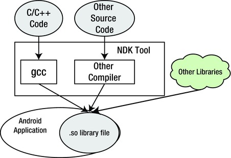
Figure 12-15.
The working mechanism of NDK tools
As Figure 12-15 shows, the GNU compiler gcc is the core tool in NDK to complete C/C++ source code compilation. gcc is the standard Linux compiler, which can compile and link C, C++, Object-C, FORTRAN, and other source code on the local machine. Not only can the gcc compiler do local compiling, but it can also do cross-compiling. This feature has been used by Android NDK and other embedded development tools. In compiler usage, gcc cross-compiling is compatible with native compiling; that is, command parameters and switches of locally compiled code can essentially be ported without modification to cross-compiling code. Therefore, the gcc compiling method described next is generic for both local and cross-compiling.
Chapter 11 mentioned that some optimizations can be done automatically by the compiler, which is referred to as compiler optimization. For systems based on Intel x86 architecture processors, in addition to the GNU gcc compiler, the Intel C/C++ compiler is also good. Relatively speaking, because the Intel C/C ++ compiler fully utilizes the features of Intel processors, the code-optimization results are better. For Android NDK, both the Intel C/C++ compiler and gcc can complete the C/C++ code compilation. Currently, the Intel C/C ++ compiler provides the appropriate usage mechanisms. Ordinary users need a professional license, whereas gcc is open source, free software and is more readily available. So, this section uses gcc as an experimental tool to explain how to perform C/C++ module compiler optimization for Android applications.
The gcc optimization is controlled by options in the compiler switches. Some of these options are machine independent, and some are associated with the machine. This section discusses some important options. Machine-related options are described only if relevant to Intel processors.
Machine-Independent Compiler Switch Options
The machine-independent options for gcc compiler switches are the -Ox options, which correspond to different optimization levels. Following are the details.
-O or -O1
Level 1 optimization, which is the default level, uses the -O option; the compiler tries to reduce code size and execution time. For large functions, it needs to spend more compiling time and use a large amount of memory resources for optimizing compiling.
When the -O option is not used, the compiler’s goal is to reduce the overhead of compiling so that results can be debugged. In this compilation mode, the statement is independent. By inserting a breakpoint interrupt program run between the two statements, you can reassign variables or modify the program counter to jump to other currently executing statements, so you can precisely control the running process and the user can get results when they want to debug. In addition, if the -O option is not used, only declared register variables can have a register allocation.
If you specify the -O option, the -fthread-jumps and -fdefer-pop options are turned on. On a machine with a delay slot, the -fdelayed-branch option is turned on. Even for machines that support debugging without a frame pointer, the -fomit-frame-pointer option is turned on. Some machines may also open other options.
-O2
This option optimizes even more. gcc performs nearly all supported optimizations that do not involve a space-speed tradeoff. As compared to -O, this option increases both compilation time and the performance of the generated code.
-O3
This option optimizes still more. It turns on all optimizations specified by -O2 and also turns on the -finline-functions, -funswitch-loops
,
-fpredictive-commoning, -fgcse-after-reload, -ftree-vectorize, -fvect-cost-model, -ftree-partial-pre, and -fipa-cp-clone options.
-O0
This option reduces compilation time and makes debugging produce the expected results. This is the default.
An automatic inline function is often used as a function-optimization measure. C99 (C language ISO standard developed in 1999) and C++ both support the inline keyword. The inline function uses inline space in exchange for time. The compiler does not compile an inline-described function into a function, but directly expands the code for the function body, thereby eliminating the function call For example, consider the following function:
inline long factorial (int i)
{
return factorial_table[i];
}
Here all occurrences of all the code in the factorial() call are replaced with the factorial_table [] array references.
In the optimizing state, some compilers treat that function as an inline function even if the function does not use inline instructions, if appropriate in the circumstances (such as if the body of the function code is relatively short and the definition is in the header file), in exchange for execution time.
Loop unrolling is a classic speed-optimization method and is used by many compilers as the automatic optimization strategy. For example, the following code needs to loop 100 cycles:
for (i = 0; i < 100; i++)
{
do_stuff(i);
}
At the end of each cycle, the cycle conditions have to be checked to do a comparative judgment. By using a loop-unrolling strategy, the code can be transformed as follows:
for (i = 0; i < 100; )
{
do_stuff(i); i++;
do_stuff(i); i++;
do_stuff(i); i++;
do_stuff(i); i++;
do_stuff(i); i++;
do_stuff(i); i++;
do_stuff(i); i++;
do_stuff(i); i++;
do_stuff(i); i++;
do_stuff(i); i++;
}
The new code reduces the comparison instruction from 100 to 10 times, and the time used to compare conditions can be reduced by 90%.
Both methods described here improve the code efficiency and accomplish the optimization of the object code. This is a typical way of optimizing the object code to make it more time efficient
Intel Processor-Related Compiler Switch Options
The m option of gcc is defined for the Intel i386 and x86-64 processor family. The main command options and their effects are shown in Table 12-3.
Table 12-3.
Intel Processor-Related gcc Switch Options
Switch Option | Notes | Description |
|---|---|---|
-march=cpu-type
-mtune=cpu-type
| Generates code for the specified type of CPU. cpu-type can be i386, i486, i586, Pentium, i686, Pentium 4, and so on. | |
-msse
| Compiler automatic vectorization: use or do not use MMX, SSE, and SSE2 instructions. For example, -msse means programming into the instruction, and -mno-sse means not programmed into the SSE instruction. | |
-msse2
| ||
-msse3
| ||
-mssse3
|
gcc-4.3 new addition | |
-msse4.1
|
gcc-4.3 new addition | |
-msse4.2
|
gcc-4.3 new addition | |
-msse4
| Include 4.1 and .2,gcc-4.3 new addition | |
-mmmx
| ||
-mno-sse
| ||
-mno-sse2
| ||
-mno-mmx
| ||
-m32
-m64
| Generate 32/64 machine code. |
In Table 12-3, -march is the CPU type of the machine, and -mtune is the CPU type that the compiler wants to optimize; by default it is the same as for -march. The -march option is a tight constraint, and -mtune is a loose constraint. The -mtune option can provide backward compatibility.
For example, a compiler with the options -march = i686
,
-mtune = pentium4 is optimized for the Pentium 4 processor but can be run on any i686 as well. And for -mtune = pentium-mmx compiled procedures, the Pentium 4 processor can be run.
The following option generates cpu-type instructions that specify the type of machine:
-march=cpu-type
The -mtune = cpu-type option is only available if you are optimizing code generated for cpu-type. By contrast, -march = cpu-type generates code not run on non-gcc for the specified type of processor, which means -march = cpu-type implies the -mtune = cpu-type option.
The cpu-type option values related to Intel processors are listed in Table 12-4.
Table 12-4.
The Main Option Values of gcc -march Parameters for cpu-type
cpu-type Value | Description |
|---|---|
native | Selects the CPU to generate code at compilation time by determining the processor type of the compiling machine. Using -march=native enables all instruction subsets supported by the local machine (hence the result might not run on different machines). Using -mtune=native produces code optimized for the local machine under the constraints of the selected instruction set. |
i386 | Original Intel i386 CPU. |
i486 | Intel i486 CPU. (No scheduling is implemented for this chip.) |
i586 | Intel Pentium CPU with no MMX support. |
Pentium | |
pentium-mmx | Intel Pentium MMX CPU, based on a Pentium core with MMX instruction set support. |
pentiumpro | Intel Pentium Pro CPU. |
i686 | When used with -march, the Pentium Pro instruction set is used, so the code runs on all i686 family chips. When used with -mtune, it has the same meaning as generic. |
pentium2 | Intel Pentium II CPU, based on a Pentium Pro core with MMX instruction set support. |
pentium3 | Intel Pentium III CPU, based on a Pentium Pro core with MMX and SSE instruction set support. |
pentium3m | |
pentium-m | Intel Pentium M; low-power version of the Intel Pentium III CPU with MMX, SSE, and SSE2 instruction set support. Used by Intel Centrino-based notebooks. |
pentium4 | Intel Pentium 4 CPU with MMX, SSE, and SSE2 instruction set support. |
pentium4m | |
prescott | Improved version of Intel Pentium 4 CPU with MMX, SSE, SSE2, and SSE3 instruction set support. |
nocona | Improved version of Intel Pentium 4 CPU with 64-bit extensions and MMX, SSE, SSE2, and SSE3 instruction set support. |
core2 | Intel Core 2 CPU with 64-bit extension and MMX, SSE, SSE2, SSE3, and SSSE3 instruction set support. |
corei7 | Intel Core i7 CPU with 64-bit extensions and MMX, SSE, SSE2, SSE3, SSSE3, SSE4.1, and SSE4.2 instruction set support. |
corei7-avx | Intel Core i7 CPU with 64-bit extensions and MMX, SSE, SSE2, SSE3, SSSE3, SSE4.1, SSE4.2, AVX, AES, and PCLMUL instruction set support. |
core-avx-i | Intel Core CPU with 64-bit extensions and MMX, SSE, SSE2, SSE3, SSSE3, SSE4.1, SSE4.2, AVX, AES, PCLMUL, FSGSBASE, RDRND, and F16C instruction set support. |
atom | Intel Atom CPU with 64-bit extensions and MMX, SSE, SSE2, SSE3, and SSSE3 instruction set and Atom Silvermont (SLM) architecture support. |
Traditional gcc is a local compiler. These command options can be added to gcc to control gcc compiler options. For example, suppose you have an int_sin.c file:
$ gcc int_sin.c
This command uses the O1 optimization level (default level) and compiles int_sin.c into an executable file named by default a.out.
This command uses O1 optimization (default level) to compile int_sin.c into an executable file; the executable file name is specified as sinnorm:
$ gcc int_sin.c -o sinnorm
This command uses O1 optimization (default level) to compile int_cos.c into a shared library file coslib.so. Unlike source code files compiled into an executable program, this command requires that the source code file int_cos.c does not contain the main function:
$ gcc int_cos.c -fPIC -shared -o coslib.so
This command compiles int_sin.c into the executable file with the default file name. The compiler does not perform any optimization:
$ gcc -O0 int_sin.c
This command uses the highest optimization level O3 to compile the int_sin.c file to the executable file with the default file name:
$ gcc -O3 int_sin.c
This command compiles int_sin.c into an executable file using SSE instructions:
$ gcc -msse int_sin.c
This command compiles int_sin.c into an executable file without any SSE instructions:
$ gcc -mno-sse int_sin.c
This command compiles int_sin.c into an executable file that can use Intel Atom processor instructions:
$ gcc -mtune=atom int_sin.c
From the example compiled by gcc locally, you have some experience using the compiler switch options for gcc compiler optimizations. For the gcc native compiler, the gcc command can be used directly in the switch options to achieve compiler optimization. However, from the previous example, you know that the NDK does not directly use the gcc command. Then how do you set the gcc compiler switch option to achieve NDK optimization?
Recall that in the NDK example, you used the ndk-build command to compile C/C++ source code; the command first needed to read the makefile Android.Mk. This file contains the gcc command options. Android.mk uses LOCAL_CFLAGS to control and complete the gcc command options. The ndk-build command passes LOCAL_CFLAGS runtime values to gcc as its command option to run the gcc command. LOCAL_CFLAGS passes the values to gcc and uses them as the command option to run gcc commands:
For example, in section 3, you amended Android.mk as follows:
1. LOCAL_PATH := $(call my-dir)
2. include $(CLEAR_VARS)
3. LOCAL_MODULE := jnitestmysharelib
4. LOCAL_SRC_FILES := jnitestccode.c
5. LOCAL_CFLAGS := -O3
6. include $(BUILD_SHARED_LIBRARY)
Line 5 is new: it sets the LOCAL_CFLAGS variable script.
When you execute the ndk-build command, which is equivalent to adding a gcc -O3 command option, it instructs gcc to compile the C source code at the highest optimization level, O3. Similarly, if you edit the line 5 to
LOCAL_CFLAGS := -msse3
you instruct gcc to compile C source code into object code using SSE3 instructions that Intel Atom supports.
You can set LOCAL_CFLAGS to a different value and compare the target library file size and content differences. Note that this example jnitest C code is very simple and does not involve complex tasks. As a result, the size and content of the library files are not very different when compiled from different LOCAL_CFLAGS values.
Is there an example where there is a significant difference in the size or content of the library file? Yes, as you will see in the following sections.
Optimization with Intel Integrated Performance Primitives (Intel IPP)
Figure 12-15 shows that Android applications can bypass NDK development tools and use existing .so shared libraries developed by third parties directly, including third-party shared libraries provided by Intel Integrated Performance Primitives (Intel IPP). Intel IPP is a powerful function library for Intel processors and chipsets, and it covers math, signal processing, multimedia, image and graphics processing, vector computing, and other areas. A prominent feature of Intel IPP is that its code has been extensively optimized based on the features of the Intel processor, using a variety of methods. It is a highly optimized, high-performance service library. Intel IPP has cross-platform features; it provides a set of cross-platform and OS general APIs, which can be used for Windows, Linux, and other operating systems; and it supports embedded, desktop, server, and other processor-scale systems.
Intel IPP is really a set of libraries, each with different function areas within the corresponding library, and it differs slightly according to the number of functions supported in different processor architectures. For example, Intel IPP 5.X image-processing functions can support 2,570 functions in Intel architecture, whereas it supports only 1,574 functions in the IXP processor architecture.
The services provided by a variety of high-performance libraries, including Intel IPP, are multifaceted and multilayered. Applications can use Intel IPP directly or indirectly. It can provide support not only for applications, but also for other components and libraries.
Applications using Intel IPP can use its function interface directly or use sample code to indirectly use Intel IPP. In addition, using the OpenCV library (a cross-platform Open Source Computer Vision Library) is equivalent to indirectly using the Intel IPP library. Both the Intel IPP and Intel MKL libraries run on high-performance Intel processors on various architectures.
Taking into account the power of Intel IPP, and in accordance with the characteristics of optimized features of the Intel processor, you can use the Intel IPP library to replace some key source code that runs more often and consumes time. This way, you can obtain much higher performance acceleration than with general code. This is simply a “standing on the shoulders of giants” practical optimization method: you can achieve optimization without manually writing code in critical areas.
Intel recently released the Intel Integrated Native Development Experience (INDE), which provides both Intel IPP and Intel Threaded Building Blocks (Intel TBB) for Android application developers. You can easily use Intel IPP, Intel TBB, Intel GPA, and other tools for Android application development.
NDK Integrated Optimization Examples
This section uses a case study to demonstrate comprehensive optimization techniques by integrating NDK with C/C++. The case is divided into two steps. The first step is to compile a local function from C/C++ code to accelerate the computing tasks in a traditional Java-based program; the second step demonstrates using NDK compiler optimizations to achieve C/C++ optimization. Each step is introduced in its own section; the two sections are closely linked.
C/C++: Accelerating the Original Application
The previous chapter introduced a Java code example (SerialPi) that calculates π. In this section, you change the computing tasks from Java to C code, using NDK to turn it into a local library. You then compare it with the original Java code tasks and get some firsthand experience with using C/C++ native library functions to achieve traditional Java-based task acceleration.
The application used for this case study is named NdkExp; see Figure 12-16.
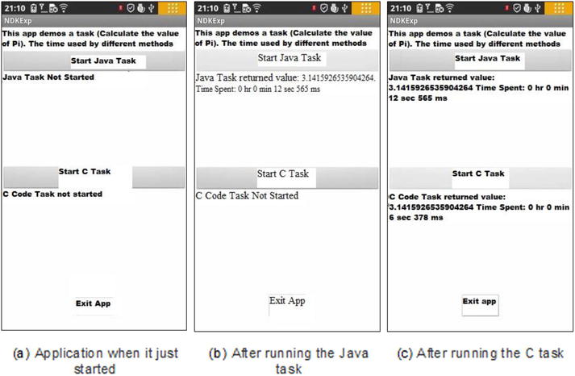
Figure 12-16.
Original version of NdkExp
Figure 12-16(a) shows the application’s main interface, including three buttons: Start Java Task, Start C Task, and Exit Application. Clicking the Start Java Task button starts a traditional Java task that calculates π. When the task is completed, the calculated results are displayed below the button along with the time spent, as shown in Figure 12-16(b). Clicking the Start C Task button starts a computing task written in C, using the same math formula to calculate π. When the task is completed, the calculated results are displayed below the button along with the time spent, as shown in Figure 12-16(c).
For the same task, the application written in traditional Java takes 12.565 seconds to complete; the application written in C and compiled by the NDK development tool takes only 6.378 seconds to complete. This example shows you the power of using NDK to achieve performance optimization.
This example is implemented as follows:
1.
Generate the project in Eclipse, name it NdkExp, and choose the Build SDK option to support the x86 version of the API. Use the default values for the other options. Then generate the project.
2.
Modify the main layout file. Put three TextView widgets and three Button widgets in the layout, set the Text and ID attributes, and adjust their size and position, as shown in Figure 12-17.
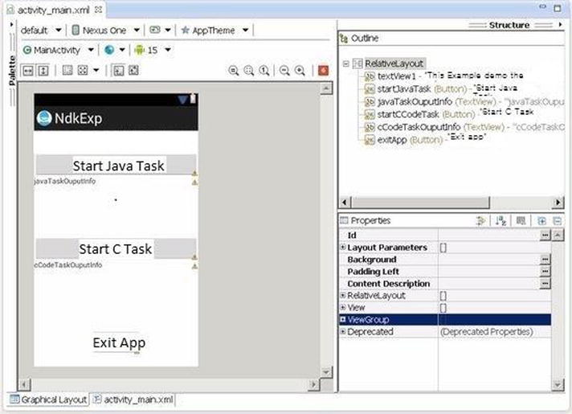
Figure 12-17.
Layout of the original NdkExp
3.
Modify the main layout of the class source code file MainActivity.java as follows:
1. package com.example.ndkexp;
2. import android.os.Bundle;
3. import android.app.Activity;
4. import android.view.Menu;
5. import android.widget.Button;
6. import android.view.View;
7. import android.view.View.OnClickListener;
8. import android.os.Process;
9. import android.widget.TextView;
10. import android.os.Handler;
11. import android.os.Message;
12.
13. public class MainActivity extends Activity {
14. private JavaTaskThread javaTaskThread = null;
15. private CCodeTaskThread cCodeTaskThread = null;
16. private TextView tv_JavaTaskOuputInfo;
17. private TextView tv_CCodeTaskOuputInfo;
18. private Handler mHandler;;
19. private long end_time;
20. private long time;
21. private long start_time;
22. @Override
23. public void onCreate(Bundle savedInstanceState) {
24. super.onCreate(savedInstanceState);
25. setContentView(R.layout.activity_main);
26. tv_JavaTaskOuputInfo = (TextView)findViewById(R.id.javaTaskOuputInfo);
27. tv_JavaTaskOuputInfo.setText("Java the task is not started ");
28. tv_CCodeTaskOuputInfo = (TextView)findViewById(R.id.cCodeTaskOuputInfo);
29. tv_CCodeTaskOuputInfo.setText("C code task is not start ");
30. final Button btn_ExitApp = (Button) findViewById(R.id.exitApp);
31. btn_ExitApp.setOnClickListener(new /*View.*/OnClickListener(){
32. public void onClick(View v) {
33. exitApp();
34. }
35. });
36. final Button btn_StartJavaTask = (Button) findViewById(R.id.startJavaTask);
37. final Button btn_StartCCodeTask = (Button) findViewById(R.id.startCCodeTask);
38. btn_StartJavaTask.setOnClickListener(new /*View.*/OnClickListener(){
39. public void onClick(View v) {
40. btn_StartJavaTask.setEnabled(false);
41. btn_StartCCodeTask.setEnabled(false);
42. btn_ExitApp.setEnabled(false);
43. startJavaTask();
44. }
45. });
46. btn_StartCCodeTask.setOnClickListener(new /*View.*/OnClickListener(){
47. public void onClick(View v) {
48. btn_StartJavaTask.setEnabled(false);
49. btn_StartCCodeTask.setEnabled(false);
50. btn_ExitApp.setEnabled(false);
51. startCCodeTask();
52. }
53. });
54. mHandler = new Handler() {
55. public void handleMessage(Message msg) {
56. String s;
57. switch (msg.what)
58. {
59. case JavaTaskThread.MSG_FINISHED:
60. end_time = System.currentTimeMillis();
61. time = end_time - start_time;
62. s = " The return value of the Java task "+ (Double)(msg.obj) +" Time consumed:"
63. + JavaTaskThread.msTimeToDatetime(time);
64. tv_JavaTaskOuputInfo.setText(s);
65. btn_StartCCodeTask.setEnabled(true);
66. btn_ExitApp.setEnabled(true);
67. break;
68. case CCodeTaskThread.MSG_FINISHED:
69. end_time = System.currentTimeMillis();
70. time = end_time - start_time;
71. s = " The return value of the C code task"+ (Double)(msg.obj) +" time consumed:"
72. + JavaTaskThread.msTimeToDatetime(time);
73. tv_CCodeTaskOuputInfo.setText(s);
74. btn_StartJavaTask.setEnabled(true);
75. btn_ExitApp.setEnabled(true);
76. break;
77. default:
78. break;
79. }
80. }
81. };
82. }
83.
84. @Override
85. public boolean onCreateOptionsMenu(Menu menu) {
86. getMenuInflater().inflate(R.menu.activity_main, menu);
87. return true;
88. }
89.
90. private void startJavaTask() {
91. if (javaTaskThread == null)
92. javaTaskThread = new JavaTaskThread(mHandler);
93. if (! javaTaskThread.isAlive())
94. {
95. start_time = System.currentTimeMillis();
96. javaTaskThread.start();
97. tv_JavaTaskOuputInfo.setText("The Java task is running...");
98. }
99. }
100.
101. private void startCCodeTask() {
102. if (cCodeTaskThread == null)
103. cCodeTaskThread = new CCodeTaskThread(mHandler);
104. if (! cCodeTaskThread.isAlive())
105. {
106. start_time = System.currentTimeMillis();
107. cCodeTaskThread.start();
108. tv_CCodeTaskOuputInfo.setText("C code task is running...");
109. }
110. }
111. private void exitApp() {
112. try {
113. if (javaTaskThread !=null)
114. {
115. javaTaskThread.join();
116. javaTaskThread = null;
117. }
118. } catch (InterruptedException e) {
119. }
120. try {
121. if (cCodeTaskThread !=null)
122. {
123. cCodeTaskThread.join();
124. cCodeTaskThread = null;
125. }
126. } catch (InterruptedException e) {
127. }
128. finish();
129. Process.killProcess(Process.myPid());
130. }
131.
132. static {
133. System.loadLibrary("ndkexp_extern_lib");
134. }
135. }
This code is basically the same as the example code for SerialPi. Only the code in lines 123–134 is ew. This code requires that the libndkexp_extern_lib.so shared library file be loaded before the application runs. The application needs to use local functions in this library.
4.
The new thread task class JavaTaskThread in the project is used to calculate π. The code is similar to the MyTaskThread class code in the SerialPi example and is omitted here.
5.
The thread task class CCodeTaskThread in the new project calls the local function to calculate π; its source code file CCodeTaskThread.java reads as follows:
1. package com.example.ndkexp;
2. import android.os.Handler;
3. import android.os.Message;
4. public class CCodeTaskThread extends Thread {
5. private Handler mainHandler;
6. public static final int MSG_FINISHED = 2; // The message after the end of the task
7. private native double cCodeTask(); // Calling external C functions to accomplish computing tasks
8. static String msTimeToDatetime(long msnum){
9. long hh,mm,ss,ms, tt= msnum;
10. ms = tt % 1000; tt = tt / 1000;
11. ss = tt % 60; tt = tt / 60;
12. mm = tt % 60; tt = tt / 60;
13. hh = tt % 60;
14. String s = "" + hh +" Hour "+mm+" Minute "+ss + " Second " + ms +" Millisecond ";
15. return s;
16. }
17. @Override
18. public void run()
19. {
20. double pi = cCodeTask(); // Calling external C function to complete the calculation
21. Message msg = new Message();
22. msg.what = MSG_FINISHED;
23. Double dPi = Double.valueOf(pi);
24. msg.obj = dPi;
25. mainHandler.sendMessage(msg);
26. }
27. public CCodeTaskThread(Handler mh)
28. {
29. super();
30. mainHandler = mh;
31. }
32. }
This code is similar to the code framework of the MyTaskThread class of the SerialPi example. The main difference is at line 20. The original Java code for calculating π is replaced by calling a local function cCodeTask to achieve the task. To indicate that cCodeTask is a local function, you add the local declaration in line 7.
6.
Build the project in Eclipse. Again, just build, rather than run.
7.
Create the jni subdirectory in the project root directory.
8.
Write the C implementation code for the cCodeTask function.
9.
Compile the file into a .so library file. The main steps are as follows.
a.
Create a C interface file. Because it is a cCodeTaskThread class using a local function, you need to generate the class header file based on the class file of this class. At the command line, go to the project directory and run the following command:
E:\temp\Android Dev\workspace\NdkExp> javah -classpath "D:\Android\android-sdk\platforms\android-15\android.jar";bin/classes com.example.ndkexp.CCodeTaskThread
This command generates a file in the project directory named com_example_ndkexp_CCodeTaskThread.h. The main content of the document is as follows:
......
23. JNIEXPORT jdouble JNICALL Java_com_example_ndkexp_CCodeTaskThread_cCodeTask
24. (JNIEnv *, jobject);
......
In lines 23–24, the prototype of the local function cCodeTask is defined.
b.
Based on these header files, create a corresponding C code file in the jni directory of the project. In this case, name it mycomputetask.c it reads as follows:
1. #include <jni.h>
2. jdouble Java_com_example_ndkexp_CCodeTaskThread_cCodeTask (JNIEnv* env, jobject thiz )
3. {
4. const long num_steps = 100000000; // The total step length
5. const double step = 1.0 / num_steps;
6. double x, sum = 0.0;
7. long i;
8. double pi = 0;
9.
10. for (i=0; i< num_steps; i++){
11. x = (i+0.5)*step;
11. sum = sum + 4.0/(1.0 + x*x);
12. }
13. pi = step * sum;
14.
15. return (pi);
16. }
Lines 4–16 are the body of the function—the code calculating π, which is the code that corresponds to the MyTaskThread class in SerialPi. It is not difficult to understand. Note that in line 4, the value of the variable num_steps (the total step length) must be the same as the value of the step size the JavaTaskThread class represents. Otherwise, it make no sense to compare the performance here.
The first line of each Jni file must contain the headers. Line 2 is the cCodeTask function prototype and is based on slightly modified header files obtained in the previous step.
Line 16 returns the results. With the Java double type, which corresponds to the C jdouble type, C can have a pi variable of type double returned directly to it. This is discussed in the introduction to this chapter.
c.
In the project jni directory, by following the method Section: Using the Command Line Method to Generate a Library File on page 12 of this chapter3, create Android.mk and Application.mk files. The content of Android.mk reads as follows:
1. LOCAL_PATH := $(call my-dir)
2. include $(CLEAR_VARS)
3. LOCAL_MODULE := ndkexp_extern_lib
4. LOCAL_SRC_FILES := mycomputetask.c
5. include $(BUILD_SHARED_LIBRARY)
Line 4 specifies the C code in the case file. Line 3 indicates the file name of the generated library; its name must be consistent with the parameters of the System.loadLibrary function in line 133 of the project file MainActivity.java.
d.
Based on the method described in Section: Using the Command Line Method to Generate a Library File on page 12 of this chapter compile the C code into the .so library file under the lib directory of the project.
10.
Run the project.
The application’s running interface is shown in the next section, in Figure 12-18.
Extending Compiler Optimization
The example demonstrates the capabilities of NDK for application acceleration. However, the application implements only one local function and is unable to provide information to compare the effects of compiler optimizations. For this purpose, in this section you rebuild the application and use it to experiment with the effects of compiler optimizations; see Figure 12-18.
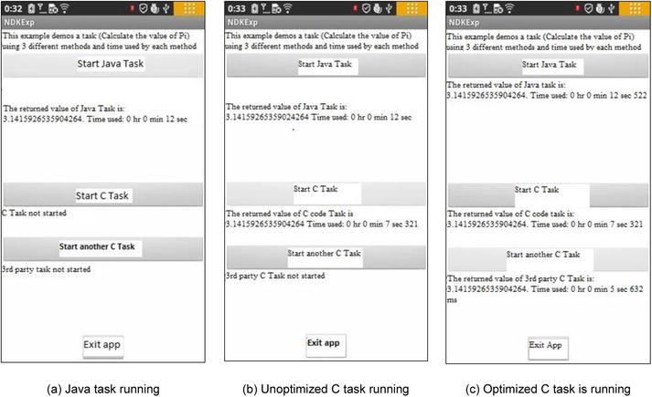
Figure 12-18.
Extended version of NdkExp
The application has four buttons. When you click the Start Java Task button, the response code does not change. When you click the Start C Task or Start another C Task button, the application starts a local function running.
The code (the function body) of the two functions is the same. It calculates the values of π, but using different names. The first button calls the cCodeTask function, and the second button calls the function. These functions are located in the mycomputetask.c and anothertask.c files, respectively, and they correspond to the library files libndkexp_extern_lib.so and libndkexp_another_lib.so after being compiled. In this case, you compile libndkexp_extern_lib.so using the -O0 option and libndkexp_another_lib.so using the -O3 option, so one is compiled unoptimized and the other is compiled optimized.
Clicking Start C Task runs the unoptimized version of the C function, as shown in Figure 12-20(b); and clicking Start Another C Task runs the optimized version, as shown in Figure 12-20(c). After task execution, the system displays the calculated results to the consumption of time.
As you can see in Figure 12-18, regardless of whether the compiler optimizations are used, the running time of the local function is always shorter than the running time (12.522 seconds) of the Java function. The execution time (5.632 seconds) of the -O3 optimization function is less than the execution time (7.321 seconds) of the unoptimized (-O0 compiler option) function. From this result comparison, you can see that using compiler optimizations actually reduces application execution time. Not only that, it is even less than the original application running time (6.378 seconds) in section
C/C++: The Original Application Acceleration. This is because the original application without compiler options defaults to the -O1 level of optimization, whereas the -O3 optimization level is even higher than the original application, so it’s not surprising that it has the shortest running time.
This application is a modified and extended version of the original application NdkExp. The steps are as follows:
1.
Modify the main layout file. Add a TextView widget and a Button widget in a layout. Set the Text and ID properties, and adjust their size and position, as shown in Figure 12-19.
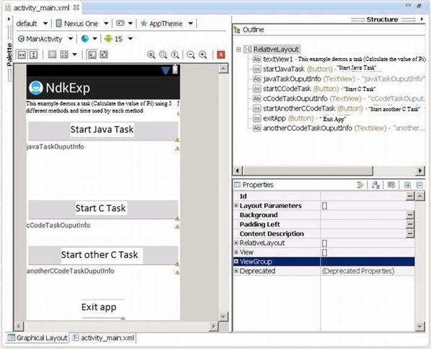
Figure 12-19.
Extended NdkExp layout
2.
Modify the class source code file MainActivity.java of the main layout. The main changes are as follows:
...
13. public class MainActivity extends Activity {
14. private JavaTaskThread javaTaskThread = null;
15. private CCodeTaskThread cCodeTaskThread = null;
16. private AnotherCCodeTaskThread anotherCCodeTaskThread = null;
17. private TextView tv_JavaTaskOuputInfo;
18. private TextView tv_CCodeTaskOuputInfo;
19. private TextView tv_AnotherCCodeTaskOuputInfo;
......
182. static {
183. System.loadLibrary("ndkexp_extern_lib");
184. System.loadLibrary("ndkexp_another_lib");
185. }
186. }
On line 16 and line 19 respectively, add the required variables for the new Start Other C Task button.
The key change is in line 184; here, in addition to loading the original shared library files, you also add another library file.
3.
In the project, add a thread task class AnotherCCodeTaskThread that calls a local function to calculate π. Its source code file AnotherCCodeTaskThread.java reads as follows:
1. package com.example.ndkexp;
2. import android.os.Handler;
3. import android.os.Message;
4. public class AnotherCCodeTaskThread extends Thread {
5. private Handler mainHandler;
6. public static final int MSG_FINISHED = 3;
// The message after the end of the task
7. private native double anotherCCodeTask();
// Calling external C functions to complete computing tasks
8. static String msTimeToDatetime(long msnum){
9. long hh,mm,ss,ms, tt= msnum;
10. ms = tt % 1000; tt = tt / 1000;
11. ss = tt % 60; tt = tt / 60;
12. mm = tt % 60; tt = tt / 60;
13. hh = tt % 60;
14. String s = "" + hh +"Hour "+mm+"Minute "+ss + "Second " + ms +"Millisecond";
15. return s;
16. }
17. @Override
18. public void run()
19. {
20. double pi = anotherCCodeTask(); // Calling external C function to complete the calculation
21. Message msg = new Message();
22. msg.what = MSG_FINISHED;
23. Double dPi = Double.valueOf(pi);
24. msg.obj = dPi;
25. mainHandler.sendMessage(msg);
26. }
27. public CCodeTaskThread(Handler mh)
28. {
29. super();
30. mainHandler = mh;
31. }
32. }
This code is almost identical to the code of the CCodeTaskThread class. It does a little processing by calling another external C function anotherCCodeTask to complete computing tasks in line 20. For this, in line 7 it provides appropriate instructions for local functions and changes the value of the message type in line 6. This way, it distinguishes itself from the previous C with a message. Line 4 shows the task class, inherited from the Thread class.
4.
Build the project in Eclipse: just a build, not a run.
5.
Modify the makefile file of mycomputetask.c, and rebuild library files. To do so, first modify the Android.mk file under the jni directory of the project, which reads as follows:
1. LOCAL_PATH := $(call my-dir)
2. include $(CLEAR_VARS)
3. LOCAL_MODULE := ndkexp_extern_lib
4. LOCAL_SRC_FILES := mycomputetask.c
5. LOCAL_CFLAGS := -O0
6. include $(BUILD_SHARED_LIBRARY)
Unlike the original application, in line 5 you add parameters for the command LOCAL_CFLAGS passed to gcc. The value -O0 means no optimization.
6.
compile the C code file into the .so library file in the lib directory of the project.
7.
Save the .so library files in the lib directory of the project (in this example, the file is libndkexp_extern_lib.so) to some other directory, because the following operations will delete this .so library file.
8.
Write the C implementation code for the anotherCCodeTask function. Copy the processing steps for the cCodeTask function in the previous section. Using the method in the section “NDK Examples,” compile the file into the .so library file. The main steps are as follows:
a.
Create a C interface file. At the command line, go to the project directory, and then run the following command:
E:\temp\Android Dev\workspace\NdkExp> javah -classpath "D:\Android\android-sdk\platforms\android-15\android.jar";bin/classes com.example.ndkexp.AnotherCCodeTaskThread
This command generates a com_example_ndkexp_AnotherCCodeTaskThread.h file. The main contents of the file are as follows:
......
23. JNIEXPORT jdouble JNICALL Java_com_example_ndkexp_AnotherCCodeTaskThread_anotherCCodeTask
24. (JNIEnv *, jobject);
......
Lines 23–24 define the local function, which is prototype.
b.
Based on the previously mentioned header files in the project Jni directory, establish corresponding C code files, in this case anothertask.c. The content is a modification of mycomputetask.c:
1. #include <jni.h>
2. jdouble Java_com_example_ndkexp_AnotherCCodeTaskThread_anotherCCodeTask (JNIEnv* env, jobject thiz )
3. {
......
17. }
The second line of mycomputetask.c is replaced by the prototype of the anotherCCodeTask function. This is the same function prototype copied from that in the .h file created in the previous step, with minor revisions. The final form is in line 2.
c.
Modify the Android.mk file in the jni directory as follows:
1. LOCAL_PATH := $(call my-dir)
2. include $(CLEAR_VARS)
3. LOCAL_MODULE := ndkexp_another_lib
4. LOCAL_SRC_FILES := anothertask.c
5. LOCAL_CFLAGS := -O3
6. include $(BUILD_SHARED_LIBRARY)
In line 4, the value is replaced with the new C code file anothertask.c. In line 3, the value is replaced with a new library file name consistent with the parameters of the System.loadLibrary function, which is in line 184 of the MainActivity.java file. In line 5, the value of the LOCAL_CFLAGS parameter for the passed gcc command is replaced with -O3, which represents the highest level of optimization.
d.
Follow the method described in section 3.1 to compile the C code file into the .so library file under the lib directory of the project. The libndkexp_extern_lib.so documents in the lib directory disappear and are replaced by a newly generated libndkexp_another_lib.so file. So, it is very important to save the library files.
9.
Put the previously saved libndkexp_extern_lib.so library file back into the libs directory. There are now two files in the directory. You can use the dir command to verify:
E:\temp\Android Dev\workspace\NdkExp>dir libs\x86
2013-02-28 00:31 5,208 libndkexp_another_lib.so
2013-02-28 00:23 5,208 libndkexp_extern_lib.so
10.
Run the project.
Comparing Compiler Optimizations
Through this case study, you have learned the effects of compiler optimization. The task execution time was shortened from 7.321 seconds before optimization to 5.632 seconds after optimization. But you only compared the difference between the gcc -O3 and -O0 command options in the example. You can extend this configuration by modifying the Android.mk file content when compiling the two files mycomputetask.c and anothertask.c
, and compare the difference in the optimizing effects when using different compiler command options. To modify the Android.mk file, you only need to modify the value of the LOCAL_CFLAGS item; you can select many gcc command options to compare. Let’s look at an example.
Example 1. Comparing Optimization Results Using SSE Instructions
Compile the Start C Task button corresponding to the Android.mk file of mycomputetask.c:
LOCAL_CFLAGS := -mno-sse
And compile the Start other C Task button corresponding to the Android.mk file of anothertask.c:
LOCAL_CFLAGS := -msse3
The former tells the compiler not to compile SSE instructions; the latter allows the compiler to program into SSE3 instructions. The reason to choose SSE3 instructions is that SSE3 is the highest level of instructions the Intel Atom processor supports.
The results of running the application are shown in Figure 12-20.
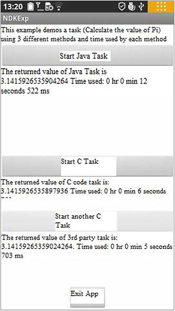
Figure 12-20.
Optimization comparison of compiler SSE instructions for NdkExp
The same task using an SSE instruction has a shorter execution time than not using an SSE instruction. The execution time is shortened from the original 6.759 seconds to 5.703 seconds.
Noted that, in this example, we finished modifying Android.mk and reran ndk-build to generate the .so library file. We immediately deployed and ran the NdkExp project but found out that we could not achieve the desired effect because only the .so library files are updated. The Eclipse project manager does not detect that that the project needs to rebuild. As a result, the .apk was not updated, and NdkExp on the target machine would not run updates or the original code. Considering this situation, you can use the following methods to avoid this problem:
1.
Uninstall the application from the phone.
2.
Delete the three documents classes.dex, jarlist.cache, and NdkExp.apk in the bin subdirectory of the host project directory.
3.
Delete the project in Eclipse.
4.
In Eclipse, re-import the project.
5.
Re-deploy and run the projects.
Here you only compared the effect of SSE instructions. You can try other gcc compiler options and compare their operating results.
In addition, the previous examples are only concerned with the NDK effect, so the C functions still use single-threaded code. You can combine the NDK optimization knowledge from this chapter with the multithreading optimization from the previous chapter and change the C function to multithreading, and implement it along with the compiler optimization. Such a set of written optimization techniques in a variety of applications will allow the applications to run faster.
Summary
This chapter introduced the Android NDK for C/C++ application development, along with related optimization methods, and optimization tools. The Intel mobile hardware and software provide a basis for low-power design. The Intel Atom processor provides hardware support for low power, which is a major feature of the Android operating system.
The next chapter presents an overview of low-power design. It also discusses the Android power-control mechanisms and how to achieve the goal of low-power application design.